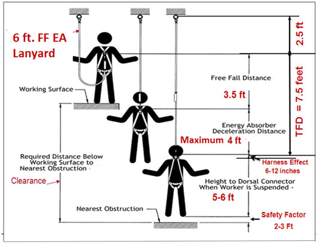

21.I Personal Fall Protection Systems
21.I.01–21.I.06
21.I.01 Personal fall protection equipment and systems (to include fall arrest, positioning and restraint) shall be used when a person is working at heights and exposed to a fall hazard.
21.I.02 Inspection of personal fall protection equipment. Personal fall protection equipment shall be inspected by the End User prior to each use to determine that it is in a safe working condition. A CP shall inspect the equipment at least once semi-annually and whenever equipment is subjected to a fall or impacted. Inspection by the CP shall be documented. Defective or damaged equipment shall be immediately removed from service and replaced. Inspection criteria shall include:
a. Harnesses, lanyards, straps and ropes: Check all components for cuts, wear, tears, damaged threads, broken or torn stitching, discoloration, abrasions, burn or chemical damage, ultraviolet deterioration and missing markings and/or labels.
b. Hardware: Check all components for signs of wear, cracks, corrosion and deformation.
21.I.03 Personal fall protection equipment shall be used, inspected, maintained and stored in a safe place in accordance with manufacturer's instructions and recommendations or as prescribed by the CP.
21.I.04 Selection of personal fall protection equipment shall be based on the type of work being performed; the work environment; the weight, size, and shape of the worker; the type and position/location of anchorage; and the required length of the lanyard.
21.I.05 Personal Fall Arrest System (PFAS) consists of full body harness, connecting means, and an anchorage system.
▸Note: All PFAS shall meet the requirements contained in ANSI Z359, Fall Protection Code, to include fall restraint and positioning systems.
- PFAS are generally certified for users within the capacity range of 130 to 310 lbs (59 to 140.6 kg) including the weight of the worker, equipment and tools.
- Workers shall not be permitted to exceed the 310 lbs (140.6 kg) limit unless permitted in writing by the manufacturer.
- For workers with body weight less than 130 lbs (59 kg), a specially designed harness and also a specially designed energy absorbing lanyard shall be utilized which will properly deploy if this person was to fall.
- When stopping a fall, PFAS shall:
- Limit maximum arresting force on the body of the employee to 1,800 lbs (8.0 kN) when used with a full body harness;
- Be rigged such that a worker can neither free fall more than 6 ft (1.8 m) nor contact any lower level or other physical hazard in the path of the fall. The free fall distance of 6 ft (1.8 m) can be exceeded if the proper energy absorbing lanyard is used.
- When designing new PFAS, the QP shall attempt to minimize fall distances including free fall distances and arrest forces. > See Figure 21-3. If it is necessary to increase free fall distances and arrest forces in order to accommodate existing and new structures or provide mobility to end users:
- Only the QP shall make this determination; and
- The maximum arrest force shall be kept below 1,800 lbs (8.0 kN).
21.I.06 PFAS – Body Support.
- Full Body Harness. PFAS require the use of a full-body harness. The use of body belts is prohibited.
- Only full body harnesses meeting the requirements of ANSI Z359 are acceptable. Full body harnesses labeled to meet the requirements of the ANSI A10.14 shall not be used.
- The fall arrest attachment point on the full body harness shall be integrally attached and located at the wearer's upper back between the shoulder blades (dorsal D-ring).
▸Note: A frontal D-ring attachment point integrally attached to wearer's full body harness and located at the sternum, can be used for fall arrest (i.e., used with a ladder climbing device), provided the free fall distance does not exceed 2 ft (0.6 m) and the maximum arresting force does not exceed 900 lbs (4 kN).
- All full body harnesses shall be equipped with Suspension Trauma Preventers such as stirrups, relief steps, or similar in order to provide short-term relief from the effects of orthostatic intolerance.
- Lineman's equipment (electrically rated harnesses). The full body harness used around high voltage equipment or structures shall be an industry designed "linemen's fall protection harness" that will resist arc flash and shall meet ASTM F887 and ANSI Z359 and the equipment must bear a label or similar stating such.
FIGURE 21-3
Calculating Fall Distance

{kind=link}